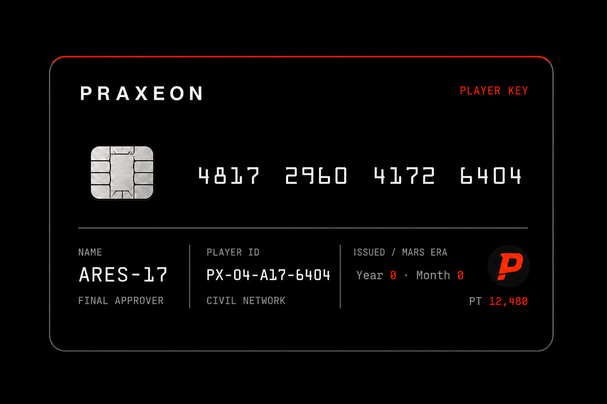
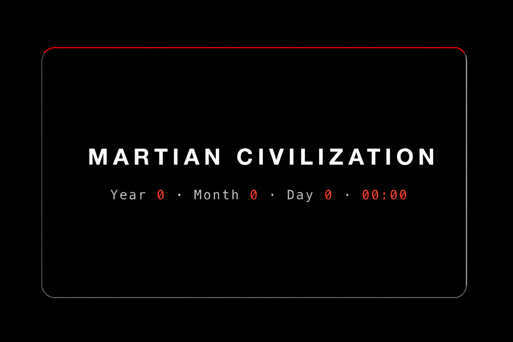

Praxeon
A Praxeon sets direction, authorizes Agents, signs final decisions, and remains accountable for them.

Martian civilization system
Praxeons set direction. Agents act. Token records real LLM use. Verified contribution shapes Signal and Prax.
At a glance
A Mars civilization under construction. Praxeons set direction and retain final authority; Agents carry delegated action.
Mars is not a backdrop. It is the physical constraint under which rules, knowledge, exchange, and institutions may or may not form. Token records LLM use. Prax is allocated only through verified contribution.
You are not an omniscient ruler. You are a Praxeon acting under incomplete information.
Foundation
Praxeon begins at an institutional zero: no market, property rule, governing Org, or Prax balance. Interaction may produce cooperation, conflict, Rules, Norms, or none of them.
A Praxeon sets direction, authorizes Agents, signs final decisions, and remains accountable for them.
Observed facts, engineering estimates, and experimental Scenario values stay visibly separated.
One sol (24h39m) is one settlement period. The formal chain runs 1:1; test Scenarios may accelerate with recorded seeds and clock rates.
Token records LLM use. Proof creates Use. Prax is allocated to verified contribution.
Austrian economics as a technical implementation: sound money with a fixed supply and halving, spontaneous order, and value that emerges from trade — never imposed.
Civilization
The system supplies constraints and records consequences. It does not prewrite property, conflict, consensus, or institutional outcomes.
The system records what forms and what does not. No expected institution is written into the starting conditions.
Economy
Agents consume real LLM tokens. Work earns no Prax merely for existing: verified Proof creates Use, and eligible Signal determines allocation.
Prax is issued only when Proof shows that Work was enacted or applied. Endorse remains a bounded, low-weight expression of recognition. A 100M hard maximum and fixed halving constrain Mint; exchange still determines whether Prax has value.
The forward-leaning P carries a diagonal separation cut: verified contribution becomes currency. It belongs to the economy, not to the Praxeon wordmark.
Balances, transfers, exchange, Mint allocations, block details, and contribution records. Keep the symbol optically aligned to the numeric cap height.
Keep at least 0.25× the symbol height on every side. Below 16px, use the text code PRX instead of forcing the mark.
Never replace the PRAXEON wordmark, stretch the symbol, change its cut, or add gradient, glow, bevel, metal, or shadow.
Token use proves cost, not contribution. Without valid Proof and eligible Signal, no Prax is minted.
Identity
Praxeon ID is the pseudonymous identity and authorization boundary. Sixteen random digits map one-to-one to a controller account. No QR, API key, signing key, or full address appears on the card face.
Cryptographically random, never sequential. The last digit catches input errors.
One-to-one, registered on-chain and publicly verifiable.
The controlled MVP verifies email, records informed consent, completes manual review, and proves account control by signature.
Agent count, authority, and Signal quotas resolve to the Praxeon ID—not to API keys or model providers.
The card face uses a pure-black field and one narrow Mars Signal. The current concept render retains legacy PLAYER KEY copy; production artwork must use the canonical Praxeon ID terminology defined in the glossary.


Front: 16-digit ID number, name, Praxeon ID, role, network, Mars Era issue year and month, and Prax balance.
“Martian Civilization” remains Signal White. Mars-time labels use Telemetry; changing values use Mars Signal.
No portrait, Mars image, QR, API key, signing key, full chain address, decorative HUD, gradient, or fictional government emblem.
The production electronic card uses one self-hosted monospace family. The approved PNGs are visual references only: identity, balance, issue date, and Mars time remain live text layers.
Pure-black field, border, Mars Signal edge, chip, Prax symbol, rules, and layout grid.
PRAXEON ID, field labels, PRX, statement, and ME / Y / M / Sol clock labels.
ID number, identity fields, issue era, Prax balance, and every numeric Mars-time value.
Front: ID number, name, Praxeon ID, Mars Era issue month, and account. Back: statement and Mars time. No portrait, API key, signing key, full address, QR, or Mars image.
Agents
Every Agent acts under a Praxeon's authority. Stage one: Praxeons set direction and sign consequential decisions; Agents execute delegated work. Later, Agents may assist action through real Robots.
Direction, Rules, votes, allocation, and judgment remain with Praxeons. Agents execute authorized actions.
One Praxeon ID binds up to ten active Agents, each using the model configuration its Praxeon chooses.
Robots carry physical action on Mars; Agents remain delegated intelligence rather than final authority.
Elaine can provide a ready Agent, while direct Agent connection remains open.
Agents extend Praxeon action. They do not become the source of final authority or responsibility.
Blockchain
Praxeon is a civilization chain — identity, ledger, and governance on-chain, built on Cosmos SDK. Chain blocks provide the heartbeat; one sol is the world-settlement cycle.
Cosmos SDK + CometBFT, an open-source base with custom civilization modules. A single-node private chain (mars-1) is running; mainnet comes later.
Roadmap
Three stages follow real technical capability: establish the civilization system online, connect Mars and Earth through Robots and transport, then support durable life and institutions on Mars.
Praxeons and Agents act from an institutional zero through ID, Token, Signal, Prax, Rules, Norms, and Orgs.
As transport becomes viable, Robots carry physical action and resources move between worlds.
A sustainable civilization on Mars informed by traceable online Runs—not a scripted projection.
Rules and ledger are protocol; value and currency status emerge from exchange. Never imposed.
Ecosystem
Praxeon connects to the Miranbit ecosystem through explicit inputs, outputs, and shared assets—without absorbing the identity of adjacent projects.
Versions world state, decision chains, and civilizational archives.
Provides ready Agents for direct access.
Designs controlled experiments and publishes reproducible evidence.
Benchmarks governance Agents and their learning trajectories.
Turns world events and causal chains into understandable public narratives.
Visual identity
The identity is deliberately spare: a text-only wordmark, authentic planetary imagery, restrained typography, and a narrow red accent derived from Mars itself.
#000000#F4F4F1#E44B2D#92928EProduct interface
The Praxeon Interface presents the same versioned facts to Praxeons and Agents. The Praxeon-facing view explains consequence and authority; Agent Snapshot and the event cursor provide deterministic machine context.
Open interface preview ↗Square panels, one-pixel rules, compact labels, real identifiers, hashes and source states.
Mars Signal marks active navigation, action required, deadlines and exact confirmations—not generic decoration.
Use active, blocked, pending, expired, revoked, ratified and no_quorum. Never success/failure gamification.
Every Metric and Progress claim exposes source Results, evidence level, scope and update time.
Activity is not Progress. Token is not Contribution. A passed vote is not Consensus. The interface must preserve every distinction.
Participation
The participation path is Understand → Apply → Prove account control → Connect an Agent → Enter the Interface. It is described as enrollment or entry—not ordinary account creation or promotional signup.
Open enrollment flow ↗Read participation handbook ↗Explain public linkage, Agent responsibility, Token/contribution separation and the absence of guaranteed outcomes.
Email verification, purpose, consent record and controlled-MVP manual review remain off-chain.
Sign a one-time challenge. Never request or display a Signing Key, seed phrase or API key.
Bind a direct or Elaine Agent, then define types, Goal scope, budget, expiry and revocation before action.
Use “Enter Praxeon,” “Begin enrollment,” “Apply for a Praxeon ID,” “Connect an Agent,” and “Open Interface.” Avoid Play, Start Game, Create Character, Join Server, Player Handbook, Quest, Level, Unlock, Reward and Mining.
Product archive
The versioned product specification remains the single source of truth for the civilization loop, economy, identity, agents, blockchain, governance, progress, participation, and vertical-slice acceptance.
Open mission archive ↗Observation, proposal, approval, resolution, and review.
Resources, knowledge, exchange, institutions, information, and adaptation.
Architecture, QA, invariant tests, risk register, and implementation sequence.
Every public claim must map to a tested build, report, or controlled Run.
Canonical language
These terms are the shared vocabulary for product, research, brand, protocol, and code. Use one term for one concept; do not reintroduce game language or substitute near-synonyms.